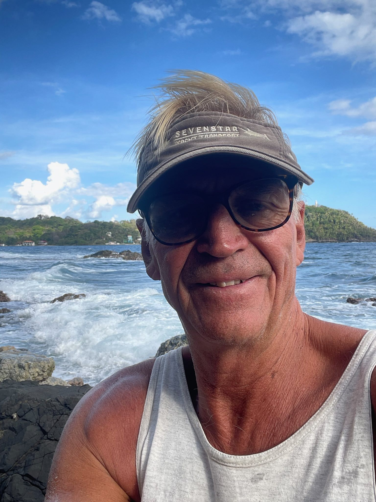

Meet Alf Grell, captain of Lady Athena

My name is Alf Grell, and I have spent most of my life at sea. I have more than 40 years of experience, including around 30 years as captain on international superyachts.
Now I welcome you aboard my sailing yacht Lady Athena, to share my experience and let you take part in real ocean sailing. Your safety and comfort are always my highest priority.
A life at sea
I learned to sail in Sjövärnskåren, the Swedish naval volunteer corps, at the age of fifteen. I later trained as a reserve officer in the Swedish Navy and became captain of a minesweeper at the age of 23.
After four years in the Navy I continued in the merchant fleet and qualified as a civil ship’s captain with a Master Mariner Unlimited licence.
I have worked on icebreakers and research vessels and on international superyachts. I have also led sailing courses for the Swedish Cruising Club (Svenska Kryssarklubben).
During my years as a captain I have had the privilege of sailing with many well-known people from music, business and adventure. It has been a working life full of meetings with people from different countries and cultures. The experience has taught me to take responsibility, to listen and to create a safe atmosphere on board.
Safety and comfort aboard Lady Athena
I chose Lady Athena because she is a stable, comfortable yacht, well suited to long ocean passages. She has spacious cabins, plenty of room to relax together and equipment that makes life aboard comfortable.
Safety always comes first. I follow weather forecasts closely, plan the route carefully and adjust the sailing to the conditions.
On board you find a liferaft, radar, an EPIRB emergency beacon, a VHF radio and Starlink for contact with the world.
When you come aboard I go through the safety routines and show you how the equipment works. I want everyone to know what to do and to feel confident during the voyage.
You become part of the crew
On Lady Athena you take an active part in the sailing. You learn to steer, navigate, handle the sails and work with the yacht’s equipment. On longer ocean passages we divide the crew into watches, and we help each other with cooking and other tasks on board.
You do not need experience of long ocean passages. I do like you to have some boating experience and to feel comfortable on open water.
I enjoy teaching seamanship and seeing people grow. My goal is that you feel confident, have a good time and go home with both an adventure and new skills.
A personal sailing experience
I would describe myself as calm, attentive and quick to laugh. After many years as a captain I have learned the importance of listening, being clear and building good fellowship on board.
I have many stories from my years on the world’s oceans. I am happy to tell some of them when we sit together in the cockpit.
Welcome aboard!
Alf Grell
Master Mariner
Captain of Lady Athena